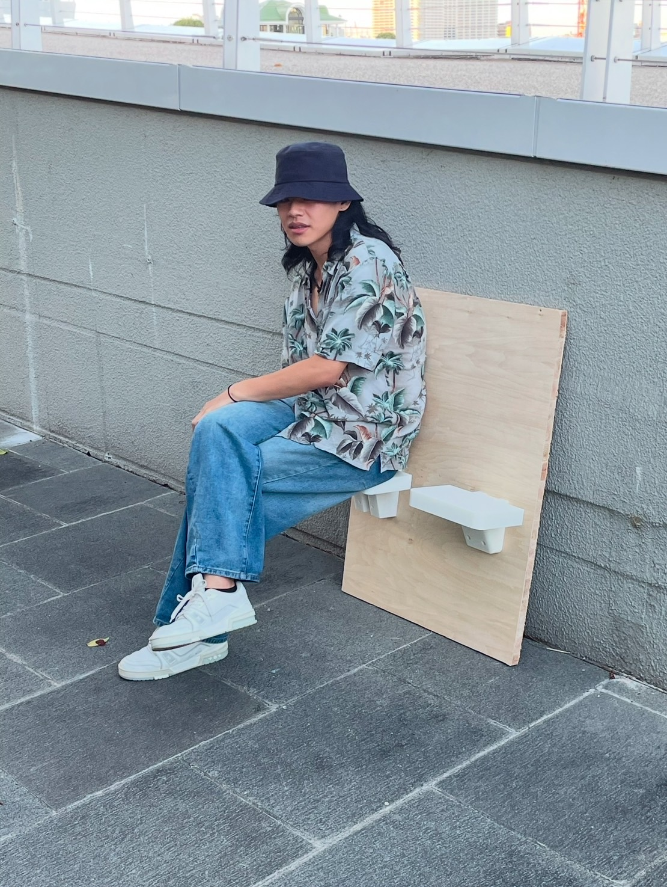
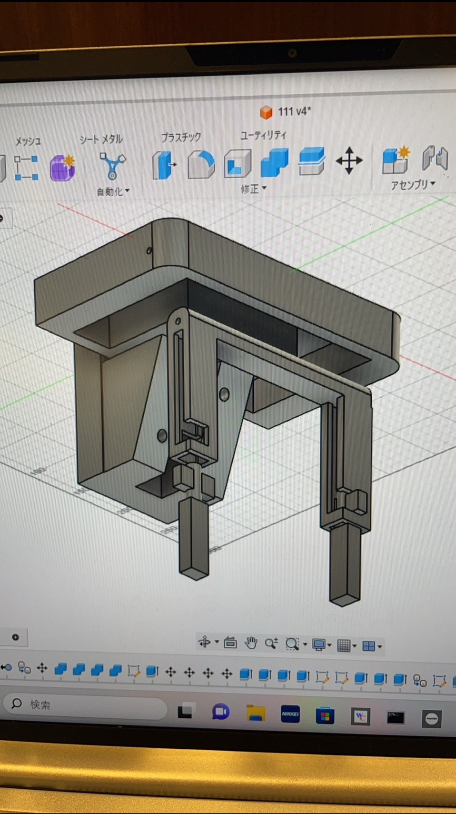
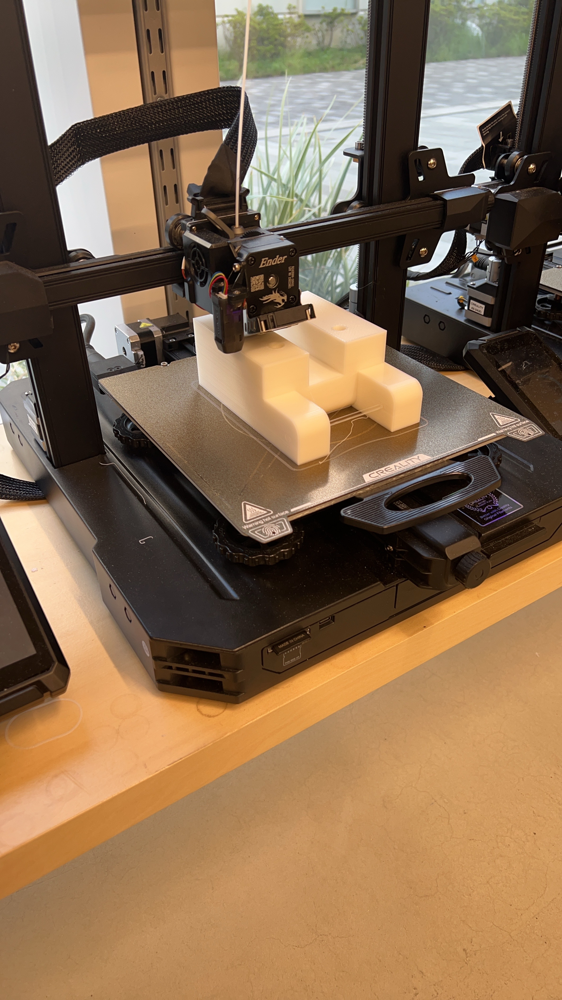

鎌倉共創プロジェクト３
成果物/完成品



感想
・プロジェクトを通じて鎌倉市の方々に喜んでいただくことができた
・３Dプリンタを通じて立体的にデザインを行えたことで多くのフィードバックが得られた
全体を通して
フィールドワークを通じて課題やニーズを発見し、解決を通じて鎌倉市の方々と関わることができた。
実際にお声を頂くことでやりがいや改善点を発見することができ、良い時間になった。
戻る
鎌倉２